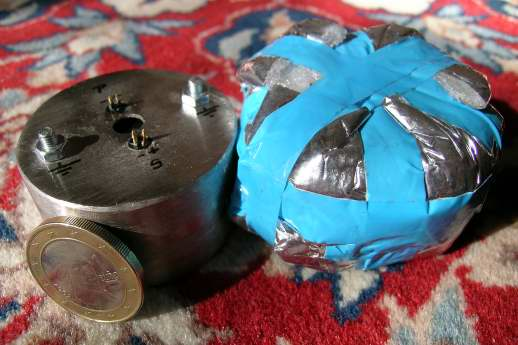
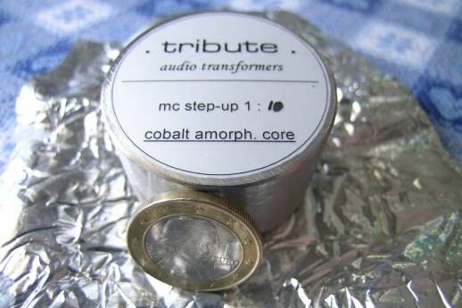
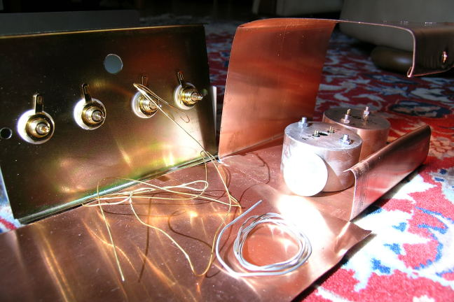
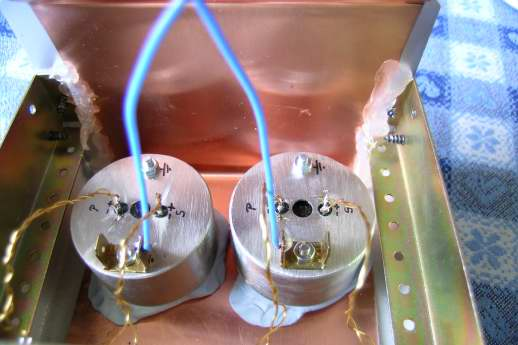
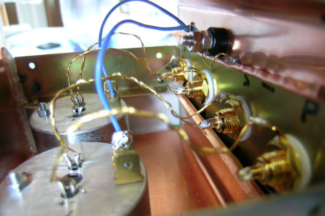
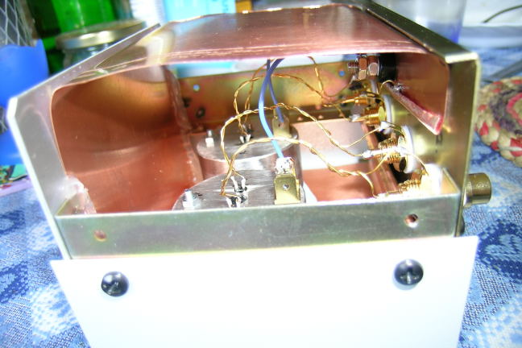
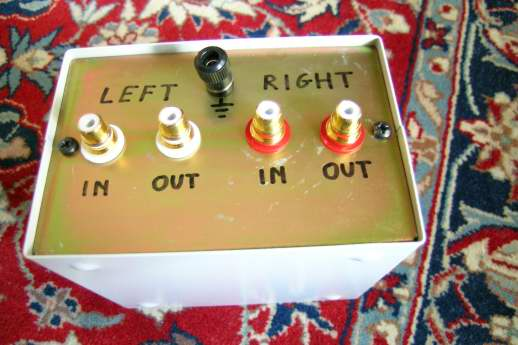

The TEA 1:10 MC step-up, based on two Tribute Audio MC transformers:
This project is very simple, because it is foundamentally based on the very interesting Tribute Audio 1:10 MC transformers, which are very good components if compared with their prices (about 250 Euro).


Pieter Treurniet (Zuidhorn, Nederland) is the guy who builds these MC transformers using different transformation ratioes, at customer request. In the picture aside you can see how these “sweets” comes from postage dispatch: be carefull that your sons will not eat them! About the connections there are few words to say: each transfomer has only a two couples of pins: the Primary (cartidge input) and Secondary (output for the phono preamplifier). Only... for my taste the “+” and “-” pins are too close each others.These MC transformers have a very special core, which is done with cobalt amorph material, as visible on the second picture. Internal wiring are copper.

To build the step-up you just need to connect the input/output pins to a couple of RCA plugs and... that is it! Well, before to start look at the “parts” picture.What I have used is:
2 Tribute Audio 1:10 MC transformers
4 RCA “panel” connectors
some Audio Consulting insulated silver wire
some silver (unleaded) solder
a piece of copper foil (thickness 0.3mm)
a metal case
From the pictures you can see how I mdeled the copper foil to form a sort of Faraday shild, which will be connected to the ground point (star grounding technique).
In the following pictures you can see how I made it. The copper foil is adapted to fit inside the metal case. The RCA plugs are fixed to the backside panel. The MC transformers are fixed to the base using only blue-tak and, finally, the silver wire is used for the electrical connections. Note all the grounding wires connected in a single point.
|
 |
 |


The final result is probably not so nice as using a wooden box, but in this way the transfomers are very well shielded. In fact, there is no particularly high background noise using this 1:10 step-up.
What about the sound? Well, the first impression is of very high details and frequency broad extension, but I need to use it more time, and to try different cartridges, before to say how good it is.
For now, I can say that it surely is much better than a similar cost product, like the Ortofon MC20.
Tino © April 2007